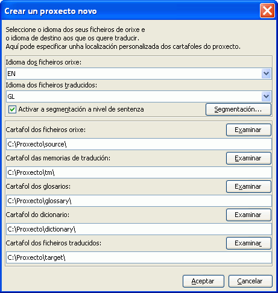

Esta guía de inicio rápido cobre só o moi básico. Idealmente todos os usuarios deberían ler o manual de usuario para familiarizarse con todas as funcionalidades que OmegaT ofrece. Os atallos descritos aquí usan a convención "CTRL+tecla" aínda que os usuarios de Mac deberían de ler no seu lugar "CMD+tecla". A tecla "CMD" tamén ten a etiqueta "command" ou unha marca de mazá nos teclados de Apple
A pantalla de OmegaT consiste nun espazo con 3 xanelas distintas. A cada unha delas pódeselle cambiar o tamaño empregando o rato. Á esquerda está o Editor que é onde se escribirán as súas traducións Na parte superior dereita está o visor de coincidencias, onde se mostran as coincidencias da memoria de tradución. Debaixo está o visor de glosario, onde se mostran as coincidencias co glosario.
Na xanela editor do OmegaT mostra o texto orixe "segmentado" en sentenzas (ou parágrafos). Vostede terá que traducir estes segmentos un por un. Ao pasar dun segmento a outro a súa tradución será gardada na memoria de tradución. En canto todos os segmentos estean traducidos (ou antes, se o pide) OmegaT empregará a memoria de tradución para xerar os documentos traducidos no cartafol "destino".
OmegaT organiza o seu traballo de tradución nos chamados proxectos de tradución. Para cada proxecto OmegaT creará un conxunto de cartafoles. Estes empréganse para almacenar os documentos orixinais que serán traducidos, os glosarios se quere empregalos, e calquera memoria de tradución que queira empregar OmegaT tamén emprega un cartafol "destino" que conterá os documentos finais traducidos.
Seleccione Proxecto → Novo... desde o menú.
Navegue ao cartafol onde quere gardar os ficheiros do proxecto, e escriba o nome do proxecto de tradución. Este nome será empregado para o cartafol principal do proxecto, e todos os ficheiros serán almacenados neste cartafol e os seus subcartafoles.
OmegaT preguntaralle se quere confirmar ou cambiar os cartafoles do proxecto para a súa creación, empregando o diálogo de abaixo:

Simplemente debe aceptar a localización dos subcartafoles, aínda que ten que asegurarse de que os códigos de idioma orixe e destino son correctos. Seleccione o código de idioma (2 letras) ou código de idioma e rexión (2 + 2 letras) desde a lista despregábel, ou insíraos a man (o código de idioma pode ter dúas ou tres letras) Lembre a localización do subcartafol destino (xa que alí estarán os seus documentos traducidos). Se quere que OmegaT segmente por sentenza no canto de por "parágrafo", comprobe de novo as Regras de segmentación.
Entón prema en Aceptar para aceptar a configuración do proxecto, OmegaT pediralle confirmación para seleccionar os documentos orixe que quere importar. Pode importar ficheiros de forma individual, ou pode importar árbores de cartafoles enteiros ( con todos os ficheiros en todos os subcartafoles). Se importou accidentalmente os documentos incorrectos, ou importou demasiados documentos, pode eliminalos de forma moi sinxela no cartafol Orixe do seu proxecto de OmegaT (usando o seu xestor de ficheiros do sistema, por exemplo).
Para comprobar a lista de ficheiros a traducir, consulte a xanela Ficheiros do proxecto (Menú: Proxecto → Ficheiros do proxecto..., se non se abre automaticamente). Se vostede tivo que cambiar os contidos do cartafol orixe, lembre recargar o proxecto (Menú: Proxecto → Recargar OmegaT abre o primeiro ficheiro da listaxe do proxecto por defecto. Lembre, OmegaT só pode traducir ficheiros nos formatos que se mostran abaixo se coinciden cos patróns definidos nos filtros de ficheiro. Calquera outro ficheiro será ignorado.
Unha vez definido o proxecto e os ficheiros que serán traducidos, OmegaT abrirá o primeiro ficheiro orixe no Editor. O primeiro segmento resaltarase en verde e copiarase o texto orixe no "campo destino" debaixo do mesmo. (Neste punto, todo o texto fora do campo destino está protexido e non pode ser modificado.) Vostede debe escribir a tradución entre as etiquetas <segment 0001> e <end segment>, sobrescribindo o texto orixe. Prema "INTRO" para avanzar ó seguinte segmento. Nota:
Pode cambiar a configuración do panel do Editor (por exemplo para mostrar ou non o texto orixe, realzar o texto traducido, etc) na entrada do menú principal Ver.
Cando prema "INTRO", acontecen algunhas cousas de forma invisíbel: OmegaT engade o par de segmentos (o segmento orixe e a súa tradución) á memoria de tradución e traduce automaticamente calquera segmento idéntico que detecte en calquera outro ficheiro no proxecto. Tamén analizará a memoria de tradución e glosario na procura de coincidencias co seguinte segmento sen traducir.
Se OmegaT encontra calquera coincidencia dubidosa (30% ou máis) para o seguinte segmento na memoria de tradución, mostraraas no Visor de coincidencias. A primeira coincidencia está preseleccionada de forma predefinida no Visor de coincidencias.

Para inserir a coincidencia coa memoria de tradución desde o Visor de coincidencias no campo destino, pode usar os seguintes atallos de teclado:
CTRL+I para inserir a coincidencia preseleccionada na posición do cursor, ou...CTRL+R para sobrescribir o segmento enteiro coa coincidencia preseleccionada.Se hai varias coincidencias e prefire usar unha coincidencia distinta á preseleccionada.
CTRL+2 para a segunda coincidencia mostrada, CTRL+3 para a terceira, etc.CTRL+I ou CTRL+R como se describe arriba.(Pode dicirlle a OmegaT que insira automaticamente no campo destino a primeira coincidencia se ten a súa porcentaxe de coincidencia é superior a un número especificado cando abra o segmento. Configure esta opción usando Opcións → Editar comportamento...
Os termos que coincidan nos glosarios e dicionarios, que puido incluír no proxecto, mostraranse como referencia nos paneis de glosario e dicionario.
OmegaT fornece un conxunto moi potente de funcións de busca. Para facer buscas prema CTRL+F e mostrarase a xanela de busca, nela insira no campo "Buscar por" unha palabra ou frase que queira buscar. De forma análoga, seleccione unha palabra ou calquera frase no panel do Editor e prema CTRL+F. A palabra ou frase inserirase automaticamente na caixa "Buscar por" neste caso.
No panel de Google Translate, automaticamente obterá unha suxestión para a tradución do segmento actual. Prema CTRL+M e substituirá o contido actual do segmento destino.
Cando remate de traducir todos os segmentos (ou antes se o desexa) OmegaT actualizará os documentos destino usando as traducións almacenadas na memoria de tradución. Para facelo, seleccione Proxecto → Crear documentos traducidos... desde o menú. OmegaT construirá as versións traducidas para todos os documentos traducíbeis no cartafol de orixe, estean ou non traducidos completamente. Os ficheiros traducidos completa ou parcialmente serán gardados no cartafol destino do proxecto. Para rematar a tradución, abra os ficheiros destino na aplicación asociada (navegador, procesador de textos...) para comprobar o contido e formato das súas traducións. Pode volver a OmegaT para facer calquera corrección necesaria, non esqueza volver a crear os documentos traducidos en cando remate a corrección.
OmegaT asegurase de que o formato dos documentos orixe (negra, cursiva, etc.) non se perda marcándoos con etiquetas especiais. As etiquetas de OmegaT están compostas por unha ou máis letras seguidas dun ou máis díxitos, empregando o carácter "/" para o peche (por exemplo: <f0>, </f0> <br>, </s2> etc. Debe xestionar estas etiquetas con coidado e asegurarse que as inclúe nos segmentos destino dunha forma axeitada (vexa operacións de etiquetas).
Nestes exemplos realzamos as etiquetas para que as poida ver mellor, pero OmegaT non as realzará. As etiquetas HTML realzadas en azul, ignoraranse por OmegaT xa que encaixan perfectamente co segmento. As etiquetas realzadas abaixo en verde deben ser manipuladas por OmegaT xa que están entre o segmento. Aquí ten un exemplo dun segmento en HTML:
<p>Pode seleccionar un tipo de letra diferente mediante o diálogo <b>Tipo de letra da pantalla</b>. Ábrao mediante o elemento do menú <i>Opcións</i> → <i>Tipo de letra...</i>. O tipo de letra e o tamaño pode cambiarse desde o diálogo.</p>
Así é como OmegaT o mostrará, coa tradución en Africano:
Cando OmegaT creou os documentos traducidos, o HTML verase así:

OmegaT non detecta automaticamente etiquetado erróneo nos documentos traducidos. Antes de distribuír o documento ao seu cliente, debería comprobar as etiquetas na busca de erros.
Seleccione Ferramentas → Validar etiquetas desde o menú. Mostrarase unha táboa mostrando os segmentos onde as etiquetas orixe e destino non teñen correspondencia. Faga clic no número de segmento. Será levado automaticamente ao segmento en cuestión no Editor, onde pode corrixir o etiquetado. Prema INTRO para validar o segmento corrixido e comprobe a corrección premendo de novo CTRL+T.
Nalgúns casos os erros nas etiquetas poden causar o estrago de documentos Debería asegurarse que corrixiu calquera erro de etiquetado antes de crear os ficheiros traducidos. Finalmente, debería comprobar o formatado final abrindo o documento traducido no seu visor ou editor asociado.
Nalgunhas linguaxes de programación (p.ex. PHP, C) as etiquetas especiais poden empregarse como parámetros de substitución nas cadeas que se empregan en combinación coa función printf. OmegaT pode detectar e validar estas etiquetas se vostede o activa. Seleccione Opcións→ Validación de etiquetas... desde o menú. Pode escoller entre a validación simple e a completa. Na validación simple só se usan as variantes sinmples dos valores dos marcadores de posición posíbeis. Isto é útil cando un código fonte non contén os marcadores de posición máis complexos ou custosos.